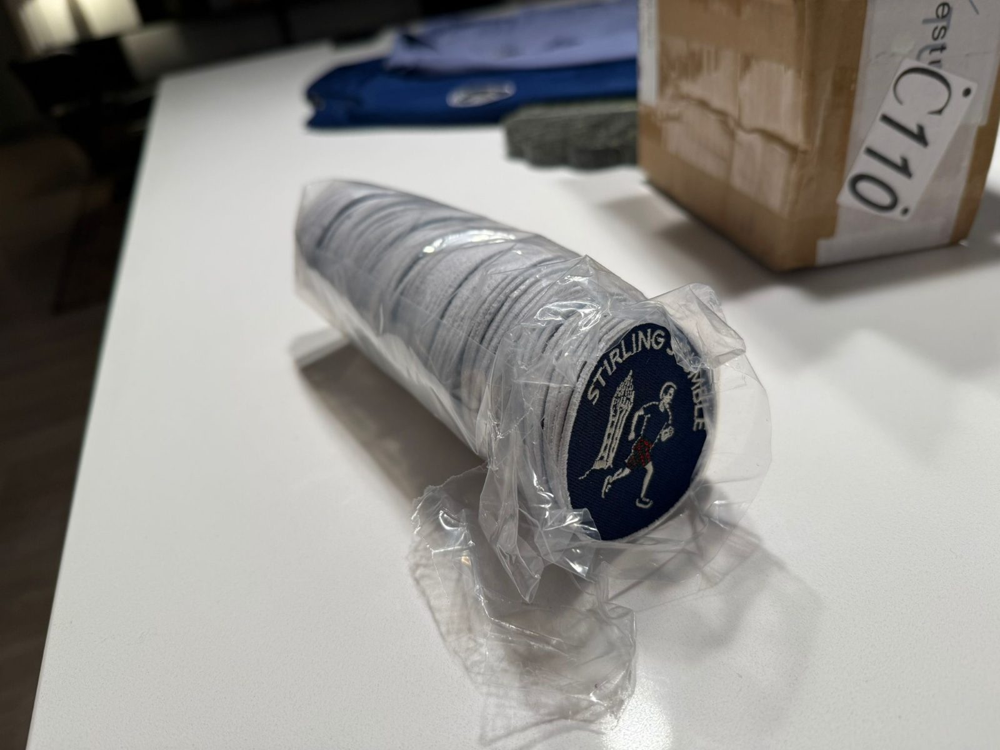
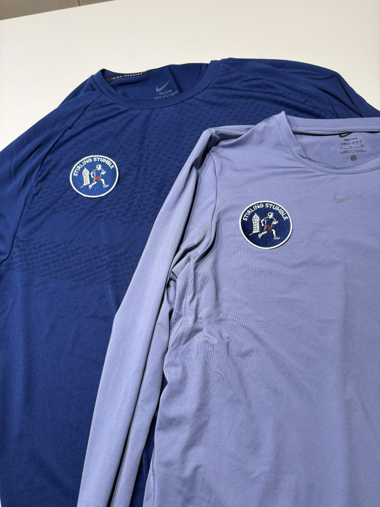
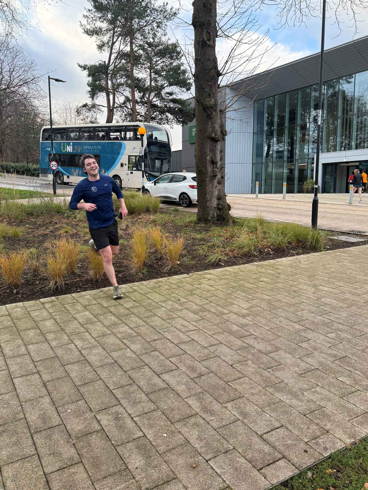
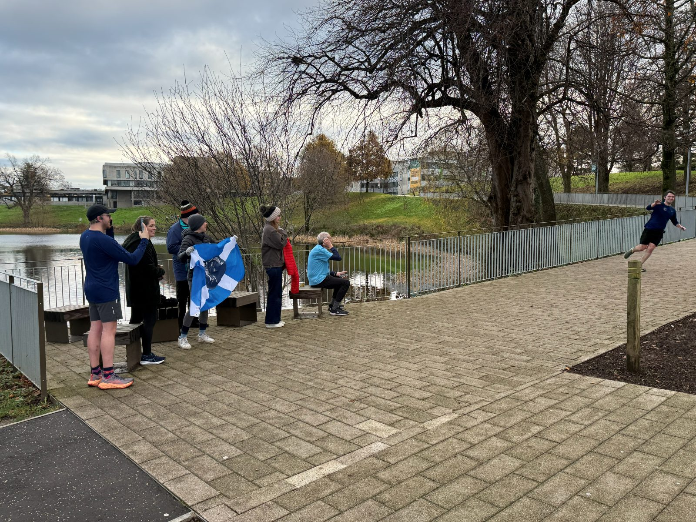
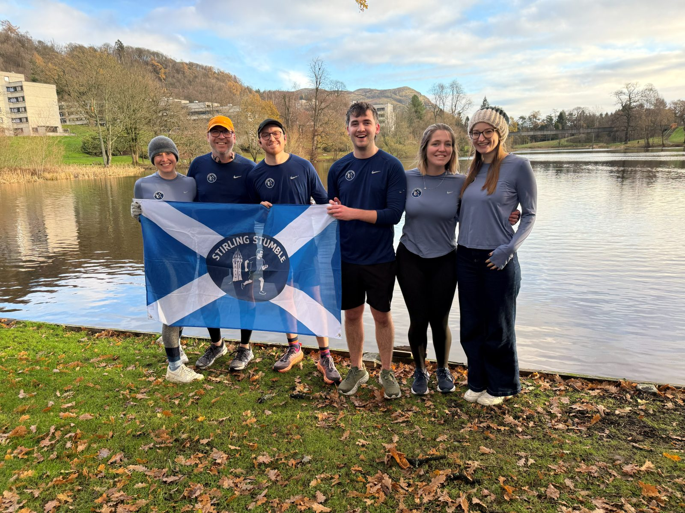

The Stirling Stumble
Race 1 · Race Report
Race 1 · Race Report
The inaugural Stirling Stumble was run on Saturday 29th November 2025, with the Wallace Monument watching over the course.
The 10K produced the Stumble's first controversy. Ben crossed the line first, but Hamish was clearly first: he was faster on Strava - 54 minutes 05 seconds, five seconds quicker than Ben. Ben did cross the finish line first, but "Strava is what counts". The argument has not been settled.
Moral victory in The 5K belonged to Fin, who ran the race despite being sick.
| # | Runner | Course | Time |
|---|---|---|---|
| 1* | Hamish | 10K | 54:05 |
| 2* | Ben | 10K | 54:10 |
| 1 | Fin | 5K | Finished |
* Strava times. Ben crossed the line first; the result is disputed.




